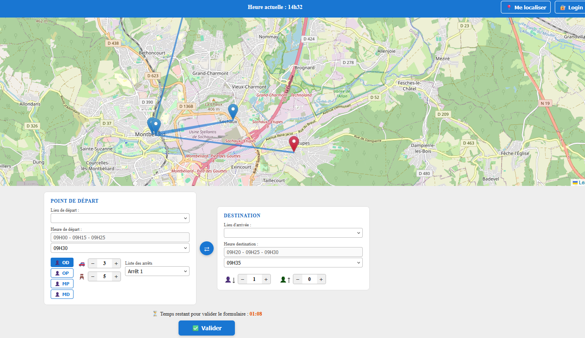
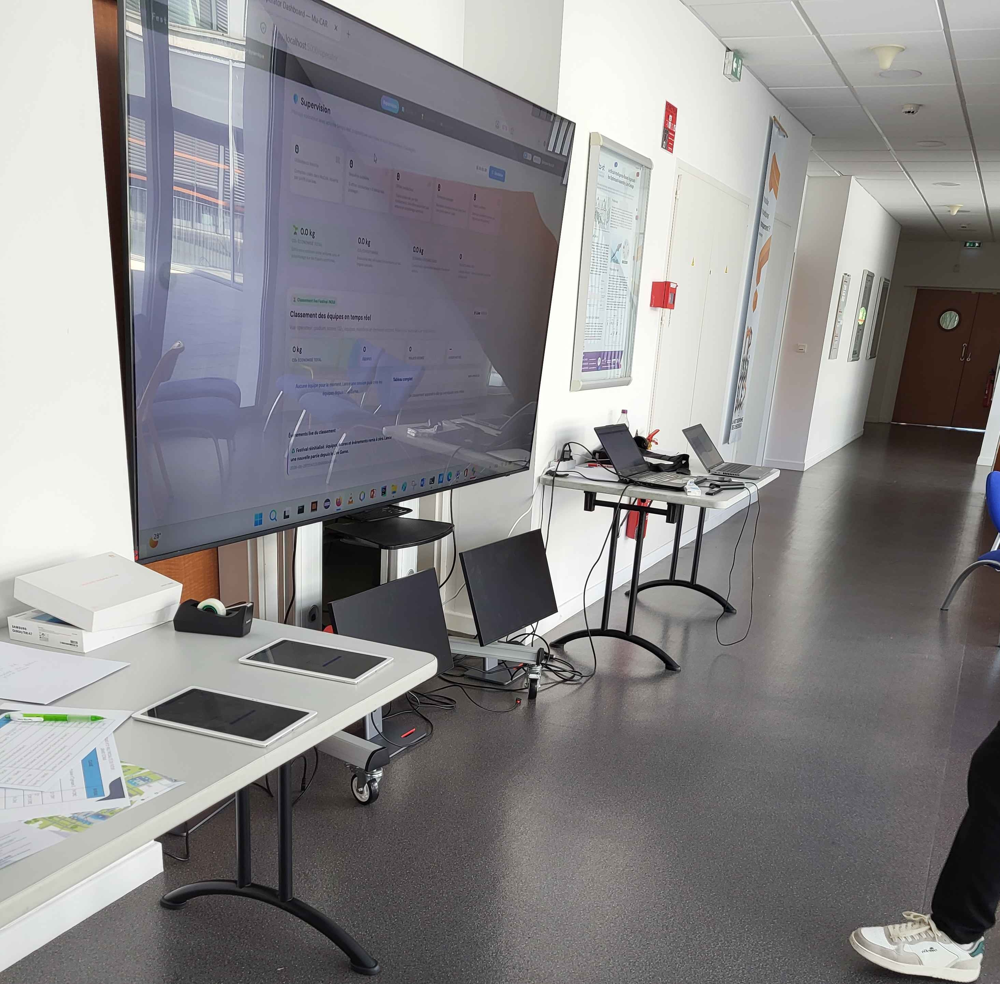

Intégration en Entreprise & Synergie
Cette section analyse ma capacité à m'intégrer au sein d'une équipe de recherche universitaire au groupe OMNI du département DISC, à collaborer activement autour d'un héritage logiciel partagé et à vulgariser des concepts informatiques complexes auprès du grand public.
Savoir-faire professionnels et relationnels couverts :
- SF-ENT-1 : Collaborer en synergie au sein d'une équipe de développement sur des briques complémentaires.
- SF-ENT-2 : Assurer le transfert technologique et le passage de relais d'une brique logicielle.
- SF-ENT-3 : Vulgariser des travaux de recherche complexes auprès d'un public non-technique.
Trace 1 : Première version du démonstrateur client (Livrable initial individuel)

Descriptif général & place dans le stage : La Trace 1 illustre le point de départ de ma productivité au sein du groupe OMNI du département DISC. J'ai conçu ce premier prototype fonctionnel de manière autonome pour matérialiser visuellement les besoins graphiques du projet Mu-CAR avant qu'une répartition des tâches ne s'organise pour optimiser le travail de chacun.
Utilisation des savoir-faire : Ce livrable a été le pivot de mon intégration et de ma posture professionnelle. J'ai appliqué le savoir-faire SF-ENT-2 lors du passage de relais de cette interface à un autre stagiaire travaillant sur la partie applicative, spécialisé dans le traitement d'interfaces évoluées. Ce transfert de code a nécessité la mise en place d'une solide synergie d'équipe (SF-ENT-1) : au lieu de faire chevaucher nos efforts sur un même module, nous avons scindé nos rôles pour faire progresser le projet global. En lui confiant la responsabilité du Front-End ([CADRE REMARQUABLE A]), j'ai pu libérer du temps pour basculer sur l'ingénierie lourde : la modélisation de la base de données et le développement de l'API d'aspiration MucarGen, garantissant une liaison robuste avec les flux de simulations gérés par mes collègues.
Trace 2 : Supports de médiation scientifique au Festival Inouïh

Descriptif général & place dans le stage : La Trace 2 témoigne de la mission de diffusion de la culture scientifique propre à un laboratoire de recherche. Au-delà des tâches de développement pur, j'ai eu l'occasion de représenter nos activités lors du Festival Inouïh pour présenter l'intérêt citoyen et écologique du projet Mu-CAR.
Utilisation des savoir-faire : Cette expérience externe a directement mobilisé le savoir-faire de communication SF-ENT-3. Face à un public de familles, de citoyens non-initiés et d'enfants, j'ai dû adapter mon langage informatique et simplifier des concepts d'optimisation mathématique (graphes, algorithme GBFCA) en métaphores accessibles. J'ai mis en avant les calculs d'émissions carbone pour valoriser concrètement l'impact des recherches menées sur le quotidien de la région Belfort-Montbéliard.
Bilan sur le savoir-faire général : Travail collaboratif et communication
Résumé des savoir-faire élémentaires associés : Synergie d'équipe (SF-ENT-1), transfert et passage de relais technologiques (SF-ENT-2) et vulgarisation publique (SF-ENT-3).
Contexte d'utilisation : Répartition des modules du projet Mu-CAR entre stagiaires et animation des stands de vulgarisation scientifique.
Contexte d'apprentissage & Difficultés : Travailler en groupe sur un projet universitaire est une chose courante, mais s'intégrer au sein d'une équipe de recherche au groupe OMNI du département DISC, avec des livrables interconnectés (Trace 1), était une nouveauté. La principale difficulté a été d'accepter de léguer l'interface graphique que j'avais moi-même codée au départ pour recentrer mes efforts exclusivement sur le backend. La vulgarisation lors du Festival (Trace 2) a également demandé un effort d'adaptation postural important pour traduire des notions de bases de données et d'API en termes d'impacts écologiques compréhensibles par tous.
Évaluation du niveau d'expertise : TRÈS BON
Justification : Grâce à ce passage de relais propre et réussi et à mon implication dans les événements de médiation, j'ai développé une posture professionnelle mûre, capable de collaborer en bonne intelligence en plaçant l'intérêt collectif et la complémentarité des tâches au centre des priorités.